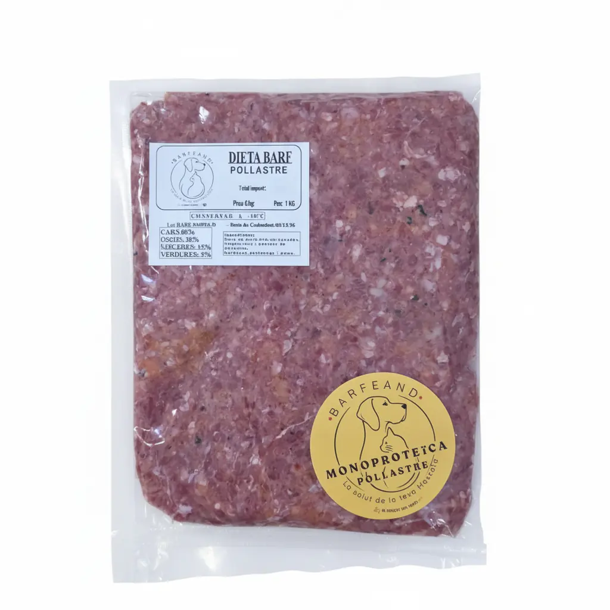
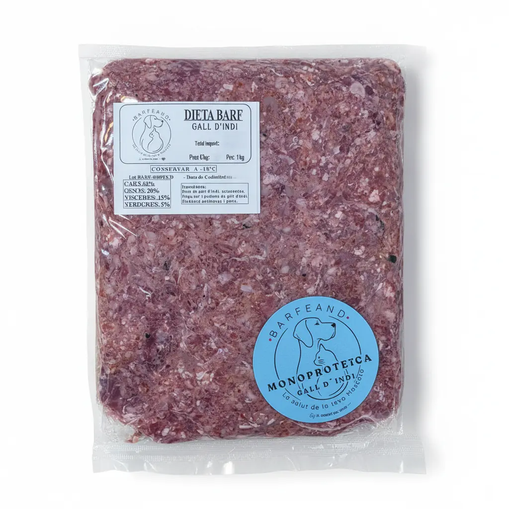
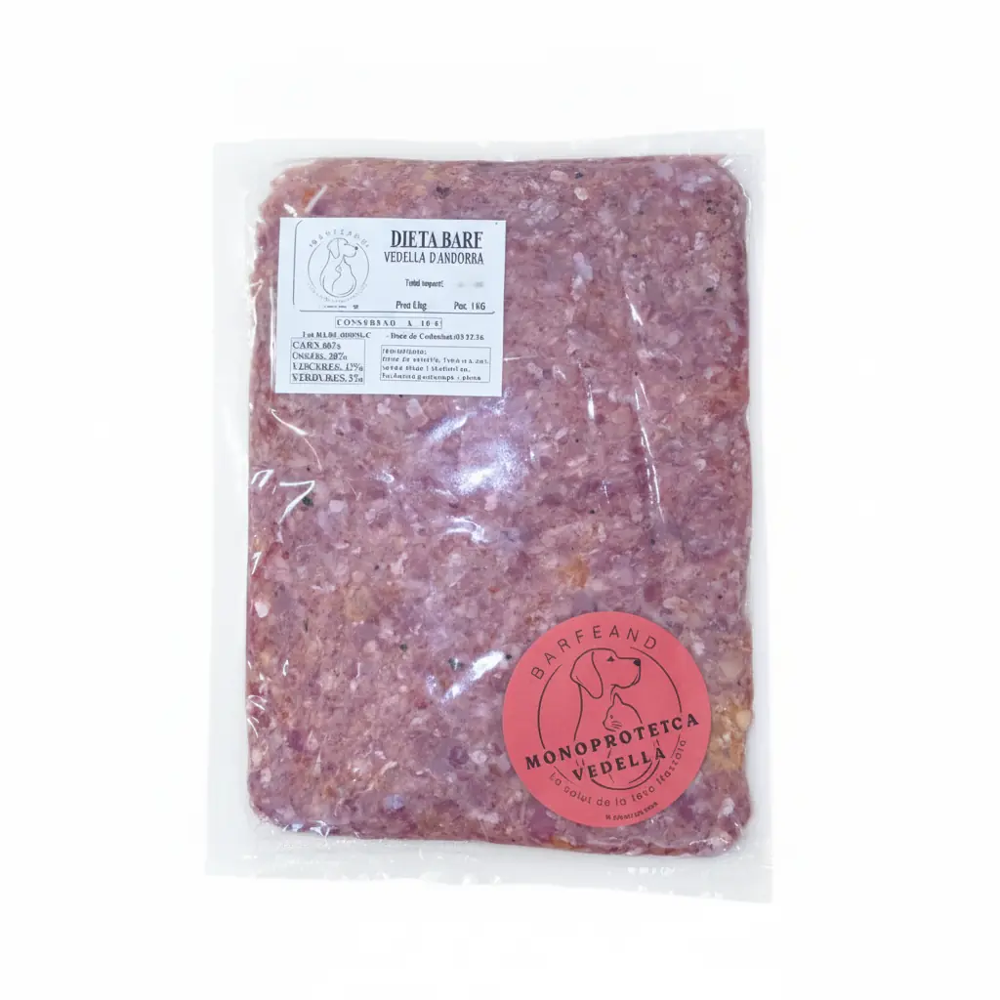
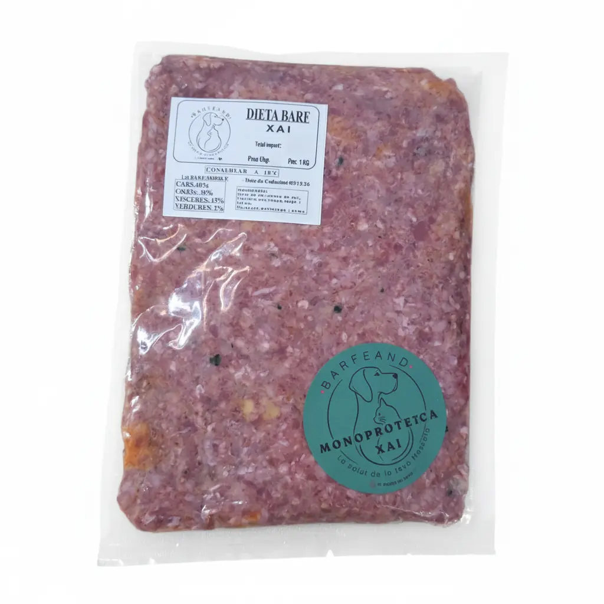
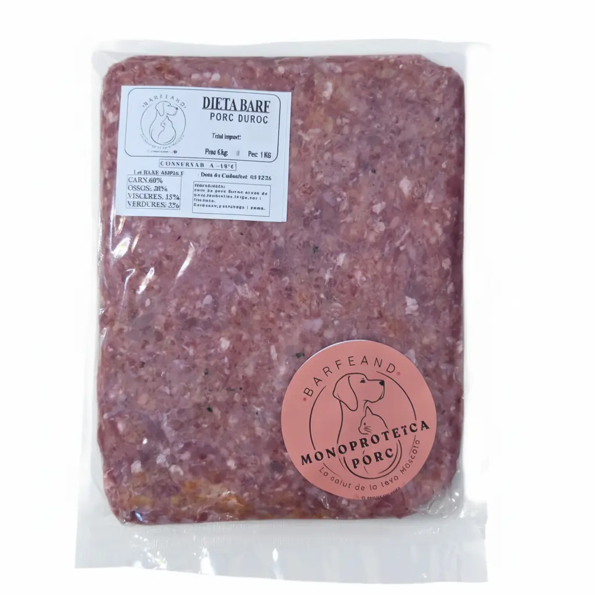
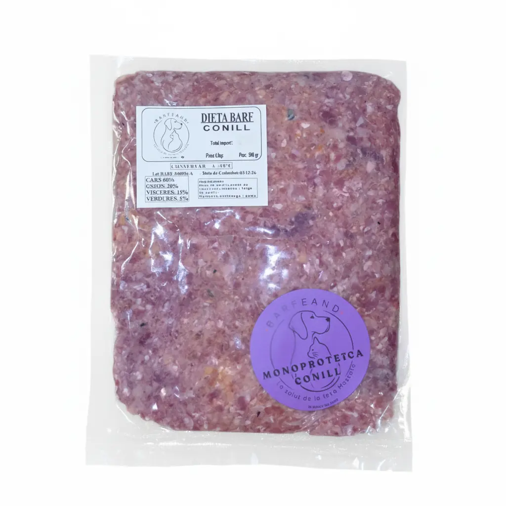
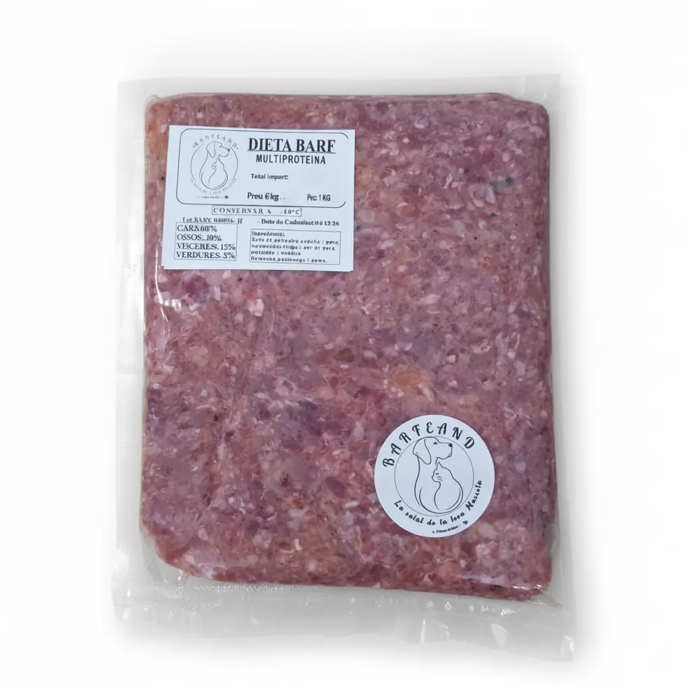

Natural
Ingredients identificables i una composició BARF clara.
Alimentació BARF · elaborada a Andorra
Receptes BARF elaborades amb carn, ossos carnosos, vísceres, verdura i fruita. Tria una recepta monoproteica o la nostra multiproteïna i calcula una ració diària orientativa.
BARFEAND
Ingredients identificables i una composició BARF clara.
Elaboració a Andorra vinculada a l’experiència d’El Rebost del Nord.
Matèries primeres seleccionades i informació de lot i caducitat a cada paquet.
Sense additius artificials afegits a les receptes.
Què és BARF?
Les receptes BARFEAND actuals mantenen una composició comuna: 60 % carn, 20 % ossos, 15 % vísceres i 5 % verdura i fruita.
Dues gammes
La gamma monoproteica identifica cada proteïna amb un color propi. La multiproteïna combina pollastre, vedella i porc.
Pollastre, gall d’indi, vedella, xai, porc Duroc i conill. En cada recepta monoproteica, el 100 % de la proteïna animal prové de l’animal indicat.
Recepta amb pollastre, vedella i porc, mantenint la mateixa proporció 60 / 20 / 15 / 5.
Calculadora BARFEAND
Introdueix les dades de la mascota. El resultat és una estimació inicial i també calcula una aproximació dels paquets necessaris per a 30 dies.
Catàleg BARFEAND
El format d’1 kg apareix seleccionat per defecte quan està disponible. El conill es comercialitza únicament en paquets de 500 g.

Monoproteïna
6,20 €/kg · conservar a −18 °C
Ingredients: Carn de pollastre, carcanades, fetge, cor i pedrers de pollastre. Carbassó, pastanaga i poma.
Comprar a El Rebost del Nord
Monoproteïna
6,50 €/kg · conservar a −18 °C
Ingredients: Carn de gall d’indi, carcanades, fetge, cor i pedrers de gall d’indi. Carbassó, pastanaga i poma.
Comprar a El Rebost del Nord
Monoproteïna
8,20 €/kg · conservar a −18 °C
Ingredients: Carn de vedella, freixura, cor, ronyó, fetge i tendrelles. Carbassó, pastanaga i poma.
Comprar a El Rebost del Nord
Monoproteïna
8,50 €/kg · conservar a −18 °C
Ingredients: Carn de xai, ossos de xai, freixura, cor, ronyó, fetge i melsa. Carbassó, pastanaga i poma.
Comprar a El Rebost del Nord
Monoproteïna
6,20 €/kg · conservar a −18 °C
Ingredients: Carn de porc Duroc, ossos de porc, tendrelles, fetge, cor i freixura. Carbassó, pastanaga i poma.
Comprar a El Rebost del Nord
Monoproteïna
8,50 €/kg · conservar a −18 °C
Ingredients: Carn de conill, ossos de conill, cor, ronyons i fetge de conill. Carbassó, pastanaga i poma.
Comprar a El Rebost del Nord
Pollastre · Vedella · Porc
5,00 €/kg · conservar a −18 °C
Ingredients: Carn de pollastre, vedella i porc, carcanades, fetge i cor de porc, pollastre i vedella. Carbassó, pastanaga i poma.
Comprar a El Rebost del NordPreguntes freqüents
Els productes d’aquesta gamma s’han de conservar congelats a −18 °C i respectar les indicacions de l’etiqueta del paquet.
Pollastre, gall d’indi, vedella, xai, porc Duroc i multiproteïna estan disponibles en 1 kg i 500 g. El conill es comercialitza exclusivament en 500 g.
Les receptes monoproteiques utilitzen una única procedència de proteïna animal. La multiproteïna combina pollastre, vedella i porc.
Online a El Rebost del Nord, amb les opcions de lliurament o recollida que ofereix la botiga. També pots trobar BARFEAND a SÜNA, perruqueria canina i felina i botiga especialitzada, a l’avinguda del Pessebre, 90, Escaldes-Engordany.
Els nostres col·laboradors
Perruqueria canina i felina i botiga especialitzada. Cura amb calma, respecte i sense presses.
Av. del Pessebre, 90 · AD700 Escaldes-Engordany